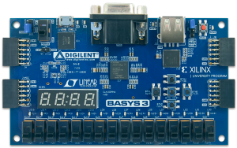

Arik Yueh
Skiathlon
Coding in verilog an old school Skiathlon game with the Basys3 board
Materials
- 1x Basys 3 Artix-7 FPGA
- 1x VGA cable
- A verilog compiler
- A computer monitor
Overview
The game waits for a user input to start the skiathlon and flashes the skier 3 times as a countdown to start. There are randomized red gates that approach the skier at a set speed and the user must maneuver the skier with the left and right buttons to not hit the red bars. As the game progresses the skier will get close to the bottom of the screen and near there the skier will start flashing which indicates a point awarded to the user. The user can lose a point if at any time they hit the red gates and the game finishes with flashing blue borders and this happens when the points match the bit value of the user's switches 4-6. The game will reset the points to 0 and resets the skier to the top in every round and waits for user input to start again.Concepts Used
Creating a Frame
Following the diagram we have a Hsync and a Vsync variable that are run by counters that reset at 525 and 800, these values act as the location and coordinate system inside the frame. There is an active region which will be a simple logic variable that is true when Hsync and Vsync are between 0 and 480, and 0 to 640. Outisde the region is when RGB outputs should be set to 0. Testing the code would show subtle gray tint throughout the screen on the monitor. There is a frame counter that is set up from the Vsync value when it resets.
RGB colors
The skier is a 16 by 16 green square with it's top left corner placed at the coordinates 312, 24. A VGA green signal is defined to color and the skier falls at a set speed of 1 pixel every 8 frames. The VGA blue signal is used as a 8 pixel thick border which surrond the screen. At any time the skier hits the border it automatically switches the skier's direction. The VGA red signal represents the red gates that will be randomized and come up with gaps. The details on the randomizer will be detailed in the state machines section
State Machines
The game is handled with two distinct state machines. The first one is only used once in the game which is the StateMachine.v. This state machine handles the states of the game, when the skier starts skiing and when to award points or finish games is all done through StateMachine.v. The other state machine is called GateMachine.v and we call it 8 times as they all ask their own gate with their own starting position. This state machine handles the reloading of the gate when it reaches the top and randomizes the gap and sets it back to the bottom. All the gates also move up at the same rate of 1 pixel every 12 frames.


Randomizer
The gates are fed with randomized intervals of gaps from left to right and each choice must not be too far away from the gap position ahead of the gate. To do this a mux is needed to select the intervals of 1 to 2 intervals to the left or 1 to 2 to the right or lastly no interval. The mux is driven by a randomizer module called LFSR.v and the random bit string is taken at the exact time the gate reloads. From the mux it has 8 options at random so it is filled with the 5 choices of intervals with a repeats to fill the 8 options.